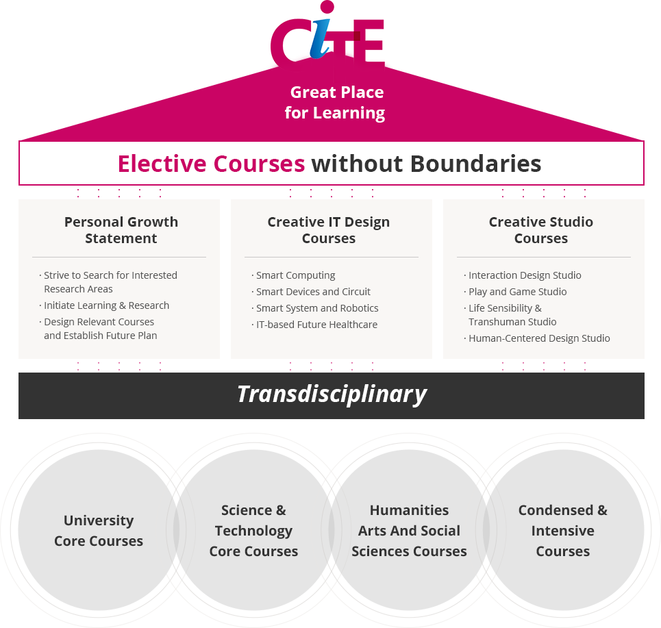
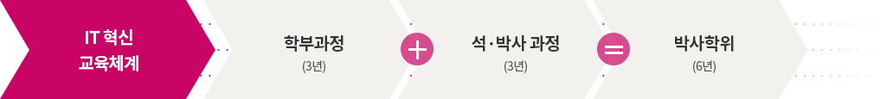
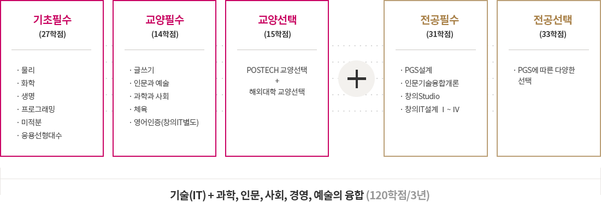

@@include('sub_visual.html',{
"title" : "학부",
"type" : "type3",
"sub_menu" : "교육"
})
@@include('../inc/tab.html',{
"has_tab" : true,
"tab_list" : ["개요","교과 이수 총괄표","창의교육 프로그램","단기유학 프로그램","학생지원제도"],
"type" : "type5"
})
학부교육체계

cite, great place for learning
elective courses without boundaries
- personal growth statement
- Strive to Search for Interested Research Areas
- Initiate Learning & Research
- Design Relevant Courses and Establish Future Plan
- creative it design courses
- Smart Computing
- Smart Devices and Circuit
- Smart System and Robotics
- IT-based Future Healthcare
- creative studio courses
- Interaction Design Studio
- Play and Game Studio
- Life Sensibility & Transhuman Studio
- Human-Centered Design Studio
transdisciplinary
- University Core Courses
- Science & Technology Core Courses
- Humanities Arts And Social Sciences Courses
- Condensed & Intensive Courses
교과과정 운영 전략
-
기존 공학교육을 넘어서는 i형 인재양성 교육과정 수립
- 3~6년간의 교육기간 동안 스스로 문제해결을 할 수 있는 환경 조성
- 대학에서 제공하기 어려운 주제에 대해서 Short course 또는 Intensive course를 적극 운영
-
CiTE의 3+3 혁신 교육 체계

IT 혁신 교육체계
- 학부과정(3년)
- 석·박사 과정(3년)
- 박사학위(6년)
- 창의 촉발의 최적화 교과 과정 → 창의 Studio + 창의IT설계 + PGS설계(학생주도학습) + 인문기술융합개론 설계/운영
- 프로젝트 위주의 교과운영을 통한 학생의 교육 몰입도 향상 기대 → 학부부터 연구활동에 적극적인 참여 유도
융합 교육 및 연구

- 기초필수(27학점)
- 물리
- 화학
- 생명
- 프로그래밍
- 미적분
- 응용선형대수
- 교양필수(14학점)
- 글쓰기
- 인문과 예술
- 과학과 사회
- 체육
- 영어인증(창의IT별도)
- 교양선택(15학점)
- postech 교양선택 + 해외대학 교양선택
- 전공필수(31학점)
- pgs 설계
- 인문기술융합개론
- 창의studio
- 창의it설계 1~4
- 전공선택(33학점)
- pgs에 따른 다양한 선택
기술(it)+과학, 인문, 사회, 경영, 예술의 융합(120학점/3년)
-
전공필수
- 창의IT설계 : 팀 및 개인 프로젝트 수행을 통해 IT융합 기술을 단계적으로 습득
- 창의스튜디오 : 자유로운 브레인 스토밍과 아이디어 공유를 위한 스튜디오 교과(3과목)
- 인문기술융합개론 : 인문, 예술분야의 상상력 + 공학적 지식
- PGS(Personal Growth Statement)설계 : 자기주도 성장계획 설계 과정
-
전공선택
- POSTECH 모든 학과 전공 교과목을 창의IT 전공선택으로 인정